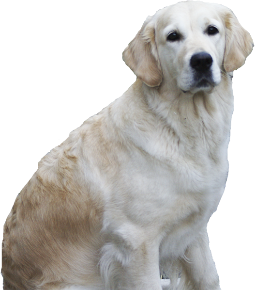

They’re good dogs, Brent.
Welcome to BorkBork, your resource for today's mainstream dogs!
Doggos and puppers are all over the internet. Have you ever seen a video of a floof being ridiculously cute on social media and wanted to learn more about what it takes to adopt one? I mean, these iconic dogs can’t help but make you want to adopt one. BorkBork is your hip resource to a few of the dogs of the internet.
Make your own bork remix!
Borks sampled from Gabe the Dog.
"EIN 今朝のお散歩♪" by luckyno3 on flickr.com, used under CC BY-NC 2.0 / Cropped and edited from original

"pug" by Andrew Yang on flickr.com, used under CC BY-NC-SA 2.0 / Cropped and edited from original
"P2120034.jpg" by Chris Yates on flickr.com, used under CC BY-NC-SA 2.0 / Cropped and edited from original
"Hoshi smelling flowers" by artistique on flickr.com, used under CC BY-NC-SA 2.0 / Cropped from original
"Happy Jordy" by Keira Morgan on flickr.com, used under CC BY-NC 2.0 / Cropped from original
"DSC00015" by Jenny van Twillert on flickr.com, used under CC BY-NC 2.0 / Cropped and edited from original
"Bea" by Stephane Venne on flickr.com, used under CC BY-NC-SA 2.0 / Cropped and edited from original